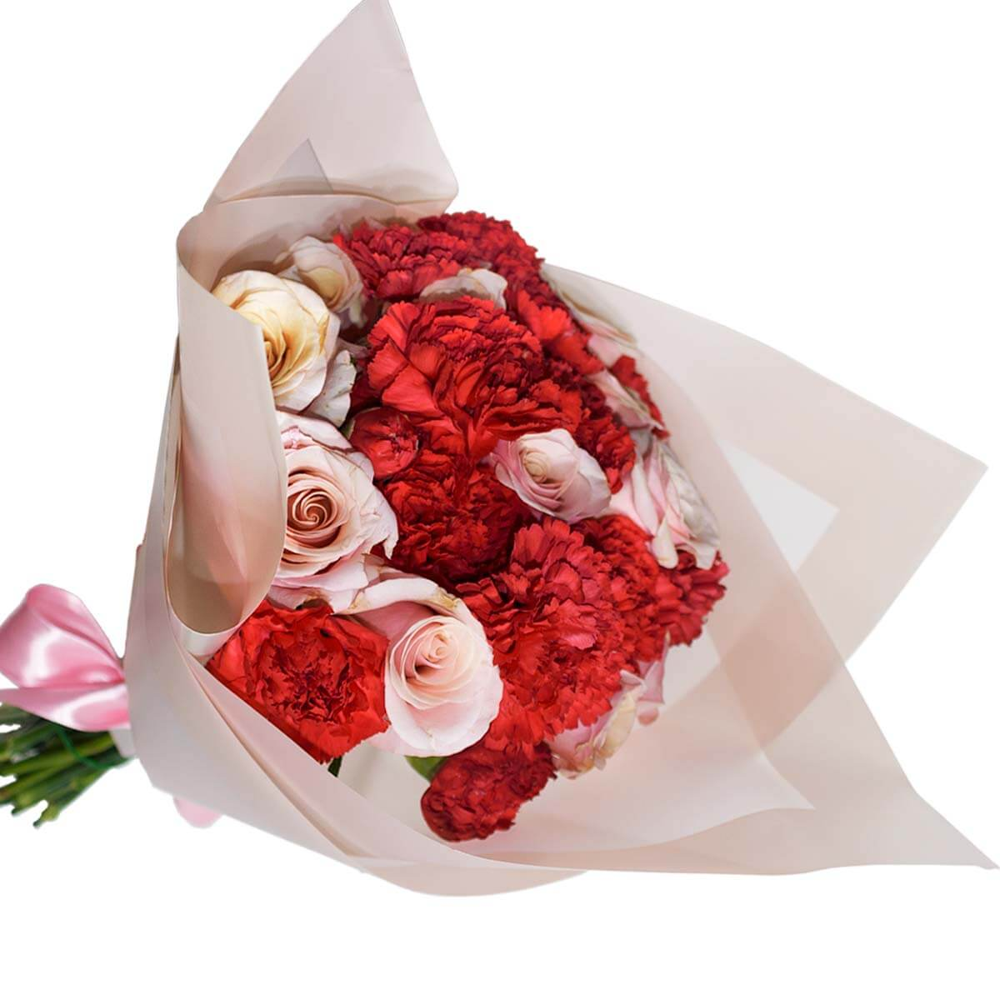
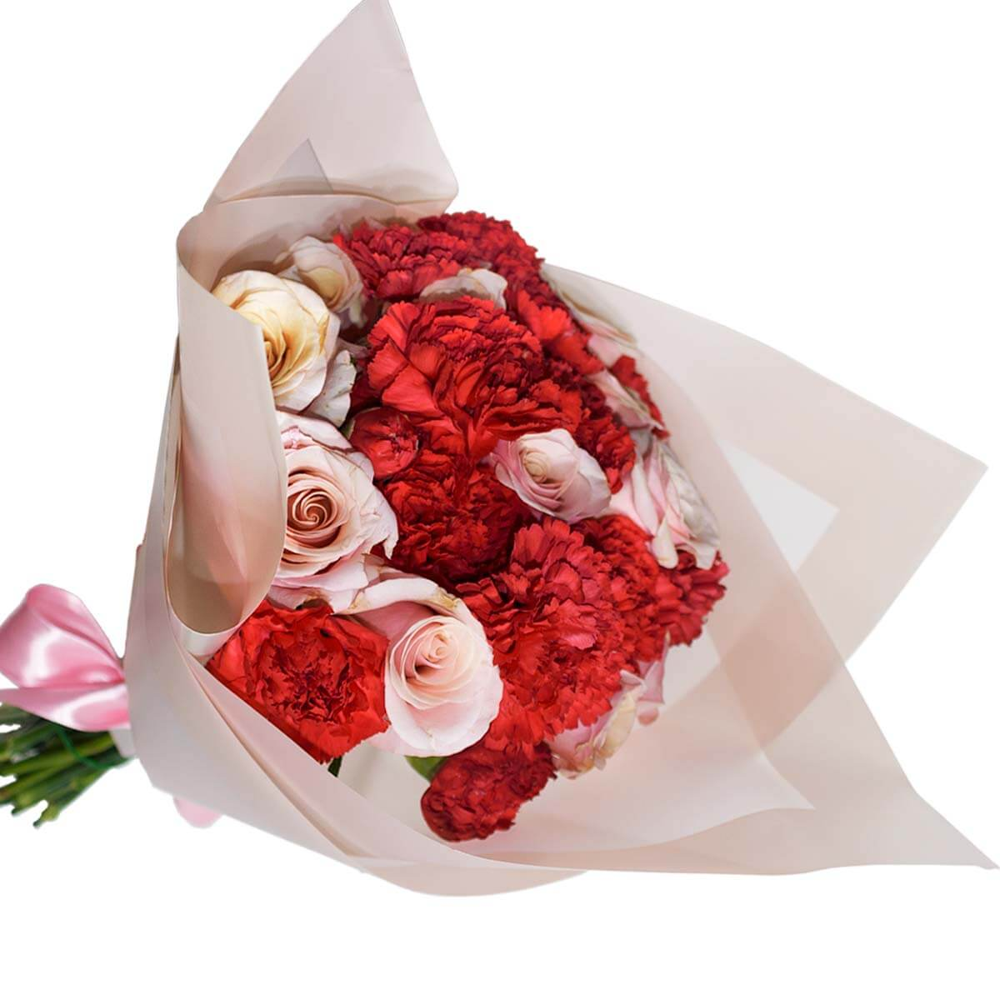

Claveles

 

Los claveles son plantas florales que pertenecen al género Dianthus. Son conocidos por sus flores coloridas y fragantes, que generalmente tienen pétalos dentados y un aroma dulce. Los claveles son populares en la jardinería y se cultivan en todo el mundo por su belleza y durabilidad. Además de su uso ornamental, los claveles también tienen aplicaciones en la industria de la perfumería y la medicina. En la perfumería, se utilizan los aceites esenciales extraídos de los claveles para crear fragancias. En la medicina tradicional, se cree que los claveles tienen propiedades analgésicas y antiinflamatorias, y se utilizan en forma de infusiones o extractos para tratar diversas dolencias.
Volver a la página principal